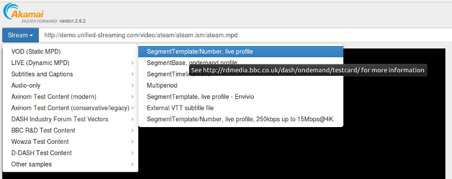
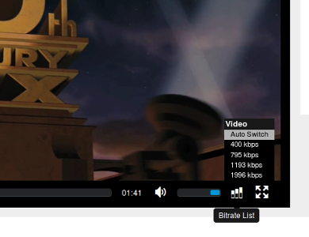

Laboratório de Redes de Computadores 2 - Prof. Ricardo da Rocha
</p>
<h1>Multimidia: Efeitos do Atraso, Erros e Adaptação em Streaming Armazenado via DASH-HTTP</h1>
<!--
4. atraso e erros e adaptação no funcionamento de aplicação streaming armazenado
- colocar atrasos e identificar mudança no funcionamento
- colocar erros e identificar mudança no funcionamento
- mudar taxa de transmissão
- alterar o bitrate e identificar mudança no comportamnto
-->
<h2>Objetivos</h2>
<ul>
<li>Identificar o efeito prático do aumento do <strong>atraso</strong>, <strong>erros</strong> no funcionamento de uma aplicação de streaming armazenada.</li>
<li>Identificar como aplicações de streaming utilizam adaptações de qualidade de transmissão durante uma transmissão.</li>
</ul>
<h2>Recursos</h2>
<ul>
<li>Protótipo de Player DASH-HTTP para demonstração e depuração: <a href="http://mediapm.edgesuite.net/dash/public/support-player/current/index.html">http://mediapm.edgesuite.net/dash/public/support-player/current/index.html</a></li>
<li>Ferramentas para verificação de atrasos na rede: <code>ping</code>, <code>traceroute</code>.</li>
</ul>
<!-- + Amostras de videos para testes: <http://www.sample-videos.com/> -->
<h2>Referências</h2>
<ul>
<li><a href="pdf/funcionamento-DASH.pdf">Apresentação sobre funcionamento do protocolo DASH-HTTP</a> sobre o DASH.</li>
<li>Iraj Sodagar, <a href="http://ieeexplore.ieee.org/xpls/icp.jsp?arnumber=6077864">"The MPEG-DASH Standard for Multimedia Streaming Over the Internet,"</a> IEEE Multimedia, vol. 18, no. 4, pp. 62-67, October-December, 2011 </li>
<li>Stoekhammer, T. <a href="https://www.w3.org/2010/11/web-and-tv/papers/webtv2_submission_64.pdf">"Dynamic adaptive streaming over HTTP-design principles and standards."</a> Proceedings of the Second Annual ACM Conference on Multimedia Systems. Vol. 2014. New York, USA: ACM, 2011.</li>
<li><a href="https://en.wikipedia.org/wiki/Dynamic_Adaptive_Streaming_over_HTTP">https://en.wikipedia.org/wiki/Dynamic_Adaptive_Streaming_over_HTTP</a></li>
<li>Ibrahim Ayad, Youngbin Im, Eric Keller, Sangtae Ha, <a href="https://www.sciencedirect.com/science/article/pii/S1389128618300288"><strong>A Practical Evaluation of Rate Adaptation Algorithms in HTTP-based Adaptive Streaming</strong></a>, Computer Networks, Volume 133, 14 March 2018, Pages 90-103, ISSN 1389-1286, <a href="https://doi.org/10.1016/j.comnet.2018.01.019">https://doi.org/10.1016/j.comnet.2018.01.019</a>.</li>
</ul>
<!-- http://santoniadis.blogspot.com.br/2014/01/mpeg-dash-multimedia-streaming-over.html -->
<h2><a name="cuidados">Cuidados Adicionais</a></h2>
<p>Esta seção deve <strong>necessariamente</strong> ser lida antes de realizar o experimento e, dependendo do caso, o experimento terá que ser refeito para atender aos detalhes aqui mencionados. Esses cuidados são para evitar problemas percebidos durante a aula de 6/dezembro, e foram discutidos ainda em aula.</p>
<p>Ao realizar os experimentos: </p>
<ol>
<li>Diferentemente do que está colocado no texto, não é necessário testar a variação no atraso/jitter/erros com diferentes taxas de transmissão, pois o <code>tc/netem</code> não aceitou a configuração simultânea desses parâmetros. Durante o experimento, teste apenas com diferentes atraso/jitter/erros e depois com diferentes taxas de transmissão (sem modificar os atrasos).</li>
<li><p>Desabilite o cache HTTP do seu browser para realizar o experimento. <strong>Obrigatório</strong>.</p>
<p>Como o DASH-HTTP utiliza requisições HTTP para recuperar porções do video, ele acaba explorando o cache HTTP para melhorar o desempenho da reprodução do video: depois que um video é reproduzido pela primeira vez, a reprodução subsequente ocorre com parcelas do video mantidas localmente pelo browser (no cache). Neste caso, mudar os atrasos ou taxas de transmissão <strong>não terá efeito</strong> na reprodução do video. </p>
<p>Consequentemente, você terá que desabilitar o cache HTTP do browser utilizado durante o experimento.</p>
<p>Para fazê-lo no Firefox (ou Chrome), escolha no menu <strong>Ferramentas</strong> / <strong>Desenvolvedor Web</strong> / <strong>Rede</strong> (ou simplesmente <strong>Ctrl-Shift-E</strong>) e selecione a caixa <strong>"Desabilitar Cache"</strong> (veja figura).</p></li>
</ol>
<p><img src="images/desabilitar-cache-firefox.png" /></p>
<p>Há outras maneiras de fazê-lo. <strong>Não é suficiente recarregar a página</strong> (usando F5, por exemplo).</p>
<hr />
<h2>Atividades </h2>
<h3>Parte I: Uso do TC e NETEM para emular atrasos e erros na rede no Linux</h3>
<p>Nesta primeira parte, você deverá utilizar a sua VM com o Mininet - preferencialmente - para emular atrasos e erros na rede, utilizando a ferramenta TC e NETEM, integradas ao kernel do sistema operacional. </p>
<ul>
<li><strong><code>tc</code></strong> é uma ferramenta para manipular os parâmetros de controle de tráfego do Linux.</li>
<li><strong><code>netem</code></strong> é um emulador de parâmetros de rede que utilizaremos com o <code>tc</code> para incluir o comportamento desejado.
<ul>
<li>Documentação do NETEM: <a href="https://wiki.linuxfoundation.org/networking/netem">https://wiki.linuxfoundation.org/networking/netem</a></li>
</ul></li>
</ul>
<p>Os exemplos abaixo mostram como adicionar os parâmetros desejados em uma interface de rede <code>eth0</code> (ethernet). Caso queira aplicar em uma interface sem fio, o nome será diferente. Execute o comando <code>ifconfig</code> para ver os nomes das suas interfaces de rede.</p>
<p><strong>Antes</strong> de qualquer modificação, execute o <code>ping</code> para um endereço qualquer e verifique os atrasos na rede. Assim, você poderá comparar com o novo atraso emulado.</p>
<ul>
<li><p>Acrescentar um atraso de 100ms</p>
<pre><code>sudo tc qdisc add dev eth0 root netem delay 100ms
</code></pre></li>
<li><p>Acrescentar um atraso de 100ms com jitter de 30ms</p>
<pre><code>sudo tc qdisc add dev eth0 root netem delay 100ms 30ms
</code></pre></li>
<li><p>Mostrar as configurações de tráfego da sua interface</p>
<pre><code>sudo tc qdisc show dev eth0
</code></pre></li>
<li><p>Remover uma das configurações</p>
<pre><code>sudo tc qdisc del dev eth0 root
</code></pre></li>
<li><p>Emulação de taxa de transmissão de 200kbps</p>
<pre><code>sudo tc qdisc add dev eth1 root handle 1: htb default 1
sudo tc class add dev eth1 parent 1: classid 0:1 htb rate 200kbit
</code></pre></li>
<li><p>Acréscimo de atraso de 400ms e taxa de perda de pacotes de 0,03%</p>
<pre><code>sudo tc qdisc add dev eth1 parent 1:1 handle 10: netem delay 400000 5 loss 0.03%
</code></pre></li>
<li><p>Emulação de perda de pacotes de 1% (é possível também com uso do <code>change</code>)</p>
<pre><code>sudo tc qdisc add dev eth0 root netem loss 1%
</code></pre></li>
</ul>
<p><strong>Não esqueça de remover</strong> as configurações quando você terminar o laboratório!</p>
<h3>Parte II: Instalação de um browser no mininet</h3>
<p>Instale um browser na VM do mininet. Sugestão: Firefox</p>
<pre><code> sudo apt-get install firefox
</code></pre>
<p>A interface do browser deverá ser exibida na máquina host (anfitriã) da sua VM, da mesma maneira como fizemos em diversos experimentos com mininet (por exemplo, com o <code>wireshark</code>).</p>
<p><strong>Importante</strong>: pode ser necessário que você habilite no Firefox a opção <strong>"Executar conteúdo protegido por DRM"</strong> para os videos serem reproduzidos. No menu <em>Preferences</em>, procure por DRM.</p>
<h3>Parte III: Efeito de Atrasos, erros, taxa de transmissão no streaming de mídia armazenada</h3>
<ol>
<li>Acesse a página do player de demonstração do DASH em <a href="http://players.akamai.com/dash/">http://players.akamai.com/dash/</a>, usando o Firefox <strong>executando na VM do mininet</strong>.</li>
<li><p>Você deverá abrir e executar os videos abaixo (veja figura), observando os valores de tamanho do buffer ("Buffer Length") e taxa de bitrate ("Bitrate Downloading"). Execute os videos por, ao menos, <strong>2 minutos</strong> e faça um screenshot do gráfico para facilitar posterior análise (salve com nomes representativos do cenário!!).</p>
<ul>
<li>VOD
<ul>
<li>SegmentTemplate/Number, live profile: <code>http://rdmedia.bbc.co.uk/dash/ondemand/testcard/1/client_manifest-events.mpd</code></li>
<li>SegmentTemplate, live profile - Envivio: <code>https://dash.akamaized.net/envivio/EnvivioDash3/manifest.mpd</code></li>
</ul></li>
<li>Other samples
<ul>
<li>Escolha qualquer um dos disponíveis</li>
</ul></li>
</ul></li>
</ol>
<p></p>
<ol>
<li><p>Modifique os valores de <strong>atraso</strong>, <strong>jitter</strong>, <strong>taxa de erros</strong> e <strong>taxa de transmissão</strong> para os valores abaixo e reexecute o experimento.</p>
<ul>
<li><strong>Atraso mínimo</strong>: 10, 100 e 400ms (e <strong>jitter</strong> variando para cada atraso entre 0, 50% e 100% do valor usado como atraso mínimo)</li>
<li><strong>Taxa de transmissão</strong>: 100kbps, 500kbps, 1000kbps</li>
<li><strong>Erros</strong>: 0.03, 0.3 e 3% (varie apenas no cenário de atraso de 400ms e taxa de transmissão de 1000kbps.</li>
</ul>
<p>Observe que são muitos experimentos a serem feitos: totalizam 27 cenários, variando atraso, jitter e taxa. É importante que você se organize para fazer o experimento e guardar os seus resultados, e <strong>todos</strong> os dados - planilhas e gráficos - devem ser guardados (veja seção <strong>"Relatório"</strong>).</p>
<p>O jitter indicado é um percentual do atraso, mas o <code>tc/netem</code> utiliza um jitter em milisegundos. Você deve, portanto, escolher o valor em ms compatível com cada cenário de atraso utilizado.</p>
<p>Responda às questões:</p>
<ol>
<li>Gere gráficos que mostrem o efeito isolado do atraso, jitter, erros e taxa de transmissão no <strong>tamanho do buffer</strong> do reprodutor de midia. Você <strong>não precisa e nem deve</strong> gerar gráficos para todos os cenários mas apenas para os cenários significativos que mostrem o efeito da grandeza. Neste caso, espero apenas 4 (quatro) gráficos de uma grandeza em relação a tamanho do buffer, com as demais grandezas fixas.</li>
<li>Explique o efeito do atraso, jitter, erro (lembre que o DASH usa TCP) e taxas de transmissão em:
<ol>
<li>Tamanho ou variação do tamanho do buffer da aplicação</li>
<li>Variação do bitrate (adaptação) no player</li>
<li>Percepção do usuário: travamentos do video, atrasos na reprodução, piora na qualidade.</li>
</ol></li>
</ol></li>
<li><p>Refaça o experimento anterior, com taxa de transmissão de 500kbps (sem atrasos ou erros adicionais) e desligue a <strong>adaptação automática</strong> de bitrate do player (conforme a figura), realizando o teste com o bitrate muito menor que 500kbps e outro maior (3000 ou 5000).</p>
<p>Responda às questões:</p>
<ol>
<li>Ao desligar a adaptação do player, quais foram os efeitos percebidos na aplicação? Explique.</li>
</ol></li>
</ol>
<p></p>
<hr />
<h1>Relatório</h1>
<p><strong>ATENÇÃO</strong>: certifique-se que você leu a seção <a href="#cuidados">Cuidados</a> antes de fazer o relatório.</p>
<!-- 2019.2
https://classroom.github.com/a/TJLl4fkl
-->
<p>Os gráficos devem seguir o formato <code>grafico_atraso&lt;valor&gt;_jitter&lt;valor&gt;_taxa&lt;valor&gt;_erros&lt;valor&gt;.png</code> (supondo imagens PNG), por exemplo <code>grafico_atraso100_jitter50_taxa500_erros0.png</code></p>
<pre><code> /4.2.3-graficos - diretório com todas as imagens dos gráficos do player DASH com tamanho de buffer e bitrate coletadas,
/4.2.3-planilhas - diretório com uma ou mais planilhas (preferencialmente CSV) com os dados dos gráficos anteriores
/Lab4.2.1 - diretório com os gráficos com efeito do atraso, gerados a partir das planilhas e em resposta à questão (3.1)
Lab4.2.3.1.txt - resposta da questão (3.2.1)
Lab4.2.3.2.txt - resposta da questão (3.2.2)
Lab4.2.3.3.txt - resposta da questão (3.2.3)
Lab4.2.4.1.txt - resposta da questão (4.1)
</code></pre>
<p>A entrega do relatório deve ser pelo github classroom, com o qual vocês terão uma área indicada a partir de email enviado para vocês. Esse relatório deve ser entregue em até 5 dias.</p>
<p>